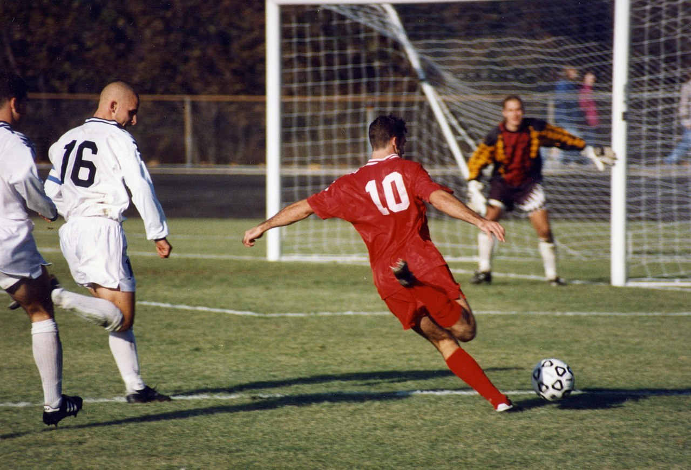

        <div class="container">
        <div class="text">
        <h1>Sporturi</h1>

        <h2>Fotbalul</h2>

        <p><strong>Fotbalul</strong> este un sport de echipă ce se dispută între două echipe alcătuite din 11 jucători fiecare. La începutul secolului al XXI-lea era jucat de peste 250 de milioane de jucători în peste 200 de țări, ceea ce îl face cel mai popular sport din lume.</p>   
        
        <p>O imagine cu acest sport poate fi gasita la adresa <a href="https://ro.wikipedia.org/wiki/Fotbal#/media/Fi%C8%99ier:Football_in_Bloomington,_Indiana,_1996.jpg" style="color:white"> -> imagine fotbal</a></p>

        

        <p><strong>Legile jocului</strong> nu impun o altă poziție ocupată în teren de vreun jucător, în afara celei de portar. De-a lungul timpului au apărut o serie de poziții specifice. Acestea sunt:</p>

        <table border="1px">
            <tr>
                <td>fundaş</td>
                <td>jucător specializat în prevenirea încercărilor de a marca ale adversarilor</td>
            </tr>
            <tr>
                <td>mijlocaş</td>
                <td>jucător care organizează jocul ofensiv al echipei şi oferă pase decisive atacanţilor; totodată el ajută apărătorii, încercând să oprească atacurile adverse încă de la început</td>
            </tr>
            <tr>
                <td>atacant</td>
                <td>jucător al cărui principal rol este acela de a marca goluri</td>
            </tr>
        </table>
        <form>
            <label for="fname">Nume:</label>
            <input type="text" id="fname" name="fname"><br/>
            <label for="lname">Prenume:</label>
            <input type="text" id="lname" name="lname"><br/>
            <label for="pwd">Parola:</label>
            <input type="password" id="pwd" name="pwd"><br/>
            <label for="sport">Sportul preferat:</label>
            <select id="sport" name="sport">
                <option value="1">Fotbal</option>
                <option value="2">Tenis</option>
                <option value="3">Baschet</option>
                <option value="4">Volei</option>
            </select><br/>
            <label for="desc">Descriere:</label>

            <textarea id="desc" name="desc" rows="4" cols="50">
               
            </textarea><br/>

            <input type="checkbox" id="check" name="check">
            <label for="check">Sunt de acord cu conditiile</label><br/>
            <button type="button">Inregistreaza</button>

        </form>    

        
        <br/>
        <p>Cinci dintre cei mai buni jucatori de fotbal ai tuturor timpurilor:</p>
        <ul>
            <li>Cristiano Ronaldo</li>
            <li>Lionel Messi</li>
            <li>Diego Maradona</li>
            <li>Pele</li>
            <li>Zinedine Zidane</li>
        </ul>
        <br/>
        <iframe src="https://ro.wikipedia.org/wiki/Fotbal" width="1000" height="400"></iframe>
        </div>
        </div>
        